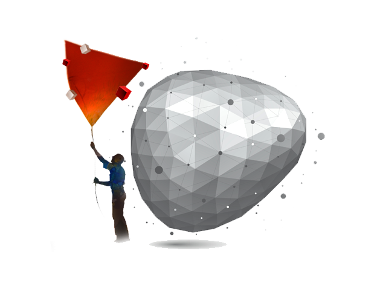

<section id="whypuppet">
    <div class="content-section-a">
        <div class="container">
            <div class="row">
                <div class="col-lg-6 col-sm-6">
                    <div class="clearfix"></div>
                    <h2 class="section-heading">Why Puppet</h2>
                    <div class="lead">
                      You would like to know if you would benefit from Puppet? Then we would like to ask you a few questions first:</br>

                      #1 Do you have a network environment with many workstations and/or different deployment environments, including public, private and hybrid clouds?</br>

                      #2 Does your IT department spend a lot of time manually configuring systems and therefore the deployment of changes often takes weeks or months?</br>

                      #3 Is it difficult to maintain consistency across the datacenter’s infrastructure and to keep everything up-to-date and secure?</br>

                      #4 Would you like to spend less time on time-consuming routine tasks and have more time to improve your service and develop new solutions that meet the increasing demands of your business?</br>

                      You had a few yeses? Then Puppet is the perfect solution for you.</br>

                      Puppet is an open-source software configuration tool that helps you to administrate your data center. It is platform independent and runs on Linux, Unix, Unix-like and Microsoft Windows systems.</br>

                      Typically, Puppet operates in a client-server configuration. The Puppet Server (puppetmaster) holds the configurations which are delivered on request to the respective Puppet Agents in the network.</br>

                      With Puppet, operators have the ability to easily automate repetitive tasks, quickly deploy new consistent systems, and rapidly deliver critical updates. Tasks and configuration settings can be easily written in Puppet’s simple and common language, so they can be reused anywhere across the data center. It’s also portable to different deployment environments including public, private and hybrid clouds.</br>

                      Since the desired state of any infrastructure, middleware or application can be precisely defined, Puppet can immediately correct unauthorized changes. This prevents inconsistent configurations and helps to avoid attacks on the systems.</br>
                      By automating away routine tasks, system administrators and operators can spend more time on more important and valuable things. They will have more time to analyze and solve new emerging problems, they can quickly set up and run new technologies by using one of the thousands of modules available on Puppet Forge. They can focus on improving the efficiency and service in the IT Center, thinking about new solutions and configurations.</br>
                      Changes that have taken weeks or months before and have tied up resources can now be implemented within hours or even minutes. It is not surprising that Puppet is a widely trusted solution across every major industry. It keeps your IT environment consistent and secure, solving problems and new tasks faster, and thanks to the improve workflows not only increases the productivity of the IT staff but the entire company.</br>
                    </div>
                  </div>
                <div class="col-lg-4 col-lg-offset-2  col-sm-6">
                  
                </div>
            </div>

        </div>
</section>
